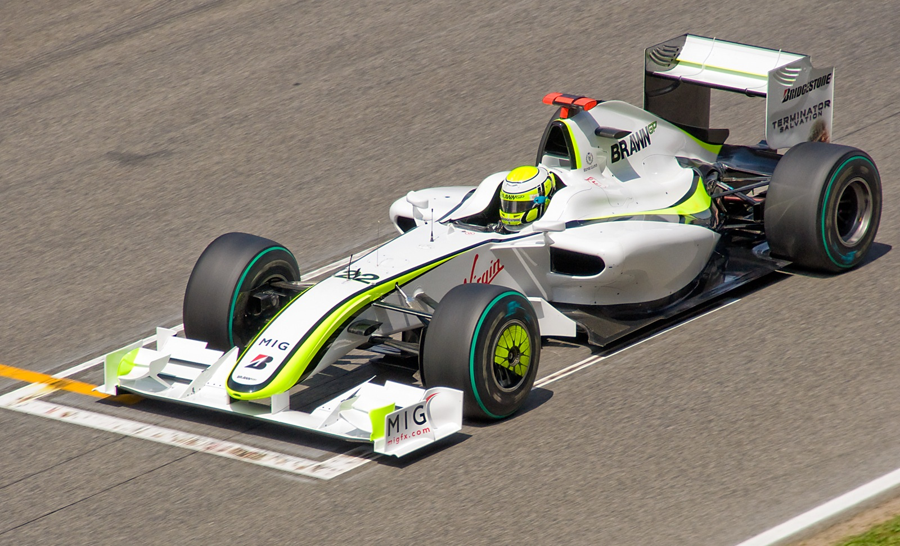

Általános iskolában már szereztem egy kevés tapasztalatot HTML kódolásból, így nagy lelkesedéssel ültem le a freecodecamp.org elé felfrissíteni a tudásomat. A középiskolában az érettségire készülve már minden weblapot a Microsoft Sharepoint Designer 2007 használatával készítettünk, de ennek ellenére élveztem kialakítani a saját kódomat.
 Elsőként a weboldal alapszíneit választottam ki, a háttérszín a kedvenc kék árnyalatom, a navigációs fül pedig a kedvenc Formula 1-es pilótám, Jenson Button 2009-es világbajnok autójáról kapta a színét. A betűtípus kiválasztása már nehézkesebb volt, amit elsőnek kiválasztottam, annál munka közben jöttem rá, hogy nem kedveli az ékezetes betűket, így váltanom kellett, és a Google betűtípusai közül a "Jost" nevűre esett a választásom. A navigációs sáv elrendezését (vízszintes) "egykori" kedvenc hírportálom, az index.hu (ma telex.hu )mintájára készítettem. Elrendezés szempontjából a bal oldalon a képek, majd mellette a szöveg elrendezést kedvelem. Amennyiben a jövőben hasznát szeretném venni az oldalnak, már tudni fogom, hol, mit, és hogyan kell megváltoztatni rajta igényeim szerint.